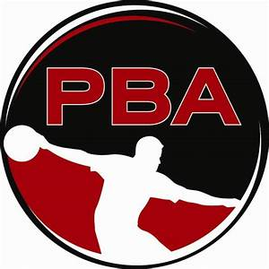

My name is Tou Yang, during my free time I have alot of things I like to do, such as games, movies, exploring. But the three things I like to do the most is volleyball, basketball, and bowling. I find a joy in each of the sports I play. Bowling because it has low stress on the body. Bowling is a 1 on 1 sport, which makes it even more competitive. Volleyball has alot of upsides to it. The game of volleyball teaches you patience and timing. Alot of hardwork has been put into volleyball. And last of all, basketball. I started playing basketball when I was kid. I started enjoying the game because it was the only sport I could practice by myself. And I could get better by myself.
Bowling
Volleyball
Basketball
Started bowling 3 years ago
Very competitive
A solo sport
Started volleyball right in my sophmore year
Loved the Highlights and the hard hits
Miss the blocking the most
Basketball was my first sport that I learned to play
Played basketball every weekend
Loved everything about the game

Thank you for stopping and taking some time from your busy schedule to read a little about me. Have a nice day.